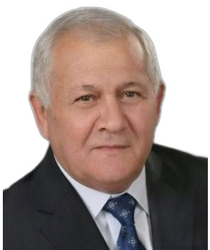

Profile
Akif Alaferdov is a candidate of medical sciences and a traumatologist-orthopedist. He graduated from Karaganda State Medical Institute in 1972 and then worked in Kyrgyzstan. For many years he was a leading specialist and head of the traumatology and orthopedics department at the National Hospital. He chaired the bureau for rationalization proposals and inventions of the Ministry of Health of Kyrgyzstan. He is chairman of the Kyrgyzstan–Azerbaijan Society of Friendship and Cooperation and a founder of the Kyrgyz Club of Friends of Azerbaijan. From 1997 to 2013 he led the Azeri public association of Azerbaijanis in Kyrgyzstan. He holds the title Honored Doctor of the Kyrgyz Republic, awarded in 2003.
Work experience
Kyrgyzstan–Azerbaijan Society of Friendship and Cooperation
Chairman
Kyrgyz Club of Friends of Azerbaijan
Founder
Azeri public association, Assembly of the People of Kyrgyzstan
1997–2013Head
National Hospital, Kyrgyzstan
Leading specialist and head of traumatology and orthopedics
Ministry of Health of the Kyrgyz Republic
1988–1993Chair
- Bureau of rationalization proposals and inventions. The narrative also mentions 1987
Kyrgyz State Medical Institute
Member of a specialized academic council
Ministry of Health of the Kyrgyz Republic
Member of the public supervisory council, for three years
Assembly of the People of Kyrgyzstan
From the 2000sMember of the Presidium and of the Council of Elders
Education
Physician’s diploma
1972Medicine
Karaganda State Medical Institute, Kazakhstan
Candidate of Medical Sciences
Research metrics
- Scientific articles — More than 30 — Self-reported
- Methodological recommendations — 3 — Self-reported
- Rationalization proposals — More than 20 — Self-reported
Publications
Books and textbooks
1. Алафердов, А. К. Хирургическая тактика и технические решения при хирургических вмешательствах у больных с переломами шейки бедренной кости. Monograph. Bishkek, 2002.
Peer-reviewed journal articles
1. К методике лечения медиальных переломов шейки бедра. In: KGMI collection, Frunze, 1977, vol. 118, pp. 9–12. Coauthored.
2. Лечение медиальных переломов шейки бедра. In: KGMI collection, Frunze, 1979, vol. 140, pp. 53–56.
3. Техника и значение первичной репозиции при хирургических переломах шейки бедра. Здравоохранение Киргизии, 1982, no. 5, pp. 34–56. Coauthored.
4. Рентгенологическая оценка переломов и ложных суставов шейки бедра. In: KGMI collection, Frunze, 1983, vol. 149, pp. 41–44. Coauthored.
5. Технические решения при хирургическом лечении повреждений в области тазобедренного сустава. Здравоохранение Киргизии, 1984, no. 3, pp. 63–64. Coauthored.
6. Антимиграционная накладка. Здравоохранение Киргизии, 1986, no. 1, pp. 47–48.
7. Лечение медиальных переломов шейки бедра. Scientific article. Bibliographic details are not printed.